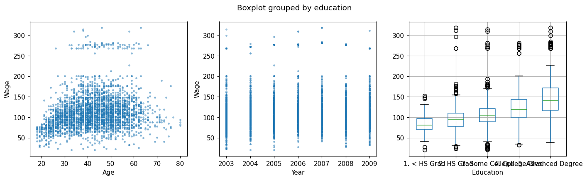
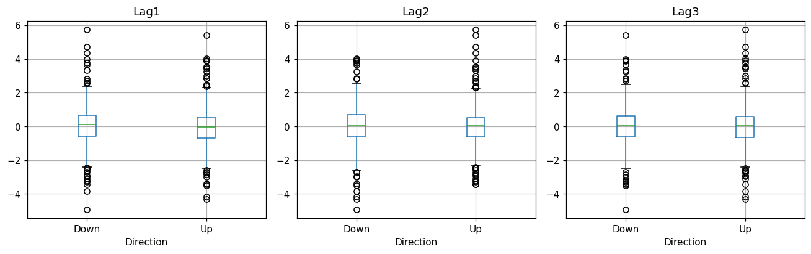
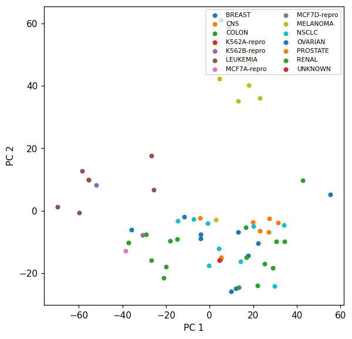

This notebook runs on Colab as-is. The badge link above and the GITHUB_RAW line in the setup cell already point to this repository, so everything installs and loads automatically.
Chapter 1 — Introduction¶
Lab: getting comfortable with the tools and the data¶
Course: Quantitative Research Methods
Instructor: Prof. Dr. Christoph Weisser
Source: James, Witten, Hastie, Tibshirani & Taylor (2023), An Introduction to Statistical Learning, with Applications in Python, Springer. Companion code at statlearning.com.
Goal. Spin up the Python tooling, load the three motivating data sets (Wage, Smarket, NCI60), and reproduce the exploratory visualisations from the chapter.
Setup¶
Run this cell once. The ISLP package can be installed with pip install ISLP. As an alternative, the same data sets are available as CSVs in the workspace’s ALL CSV FILES - 2nd Edition folder.
Google Colab: this notebook also runs on Colab out of the box — the setup cell below installs any missing packages and downloads the data automatically.
# --- Setup: runs locally AND on Google Colab --------------------------------
# Silence only the spurious 'encountered in matmul' RuntimeWarnings that the macOS
# Accelerate BLAS emits; real warnings (deprecations, model caveats) stay visible.
import warnings
warnings.filterwarnings('ignore', message='.*encountered in matmul', category=RuntimeWarning)
import importlib.util, os, subprocess, sys
IN_COLAB = 'google.colab' in sys.modules
def _ensure(pkg, import_name=None):
"""pip-install pkg (quietly) if its import is missing."""
if importlib.util.find_spec(import_name or pkg) is None:
subprocess.run([sys.executable, '-m', 'pip', 'install', '-q', pkg], check=False)
if IN_COLAB: # Colab ships numpy/pandas/sklearn/statsmodels; add course extras
for _pkg, _imp in [('ISLP', 'ISLP')]:
_ensure(_pkg, _imp)
import numpy as np
import pandas as pd
import matplotlib.pyplot as plt
rng = np.random.default_rng(2024)
plt.rcParams['figure.dpi'] = 110
try:
from ISLP import load_data
HAVE_ISLP = True
except ImportError:
HAVE_ISLP = False
print('ISLP not installed; using CSV / URL fallbacks.')
# Local CSV location (repo layout first, then legacy paths, then a data/ cache).
_CANDIDATES = ['../ALL CSV FILES - 2nd Edition',
'ALL CSV FILES - 2nd Edition',
'../../ALL CSV FILES - 2nd Edition', 'data']
CSV = next((p for p in _CANDIDATES if os.path.isdir(p)), 'data')
# GITHUB_RAW lets a fresh Colab runtime fetch any
# CSV that is neither in ISLP nor already local (spaces in the folder -> %20).
GITHUB_RAW = ('https://raw.githubusercontent.com/ChrisW09/Quantitative-Research-Methods/main/'
'ALL%20CSV%20FILES%20-%202nd%20Edition')
# The four datasets NOT in the ISLP package -> load from the book's official
# site so the notebook works on a fresh Colab even before the repo is published.
KNOWN_URLS = {
'Advertising': 'https://www.statlearning.com/s/Advertising.csv',
'Heart': 'https://www.statlearning.com/s/Heart.csv',
'Income1': 'https://www.statlearning.com/s/Income1.csv',
'Income2': 'https://www.statlearning.com/s/Income2.csv',
}
def load(name, **read_csv_kwargs):
"""Load a course dataset. Order: ISLP package -> R datasets -> local CSV
-> official book URL -> your GitHub repo. Works locally and on Colab."""
if HAVE_ISLP:
try:
return load_data(name)
except Exception:
pass
if name == 'USArrests': # classic R dataset, not in ISLP
try:
import statsmodels.api as sm
return sm.datasets.get_rdataset('USArrests', 'datasets').data
except Exception:
pass
path = f'{CSV}/{name}.csv'
if os.path.exists(path): # running from the repo (local)
return pd.read_csv(path, **read_csv_kwargs)
remotes = ([KNOWN_URLS[name]] if name in KNOWN_URLS else []) + [f'{GITHUB_RAW}/{name}.csv']
for url in remotes: # fresh Colab: stream over https
try:
return pd.read_csv(url, **read_csv_kwargs)
except Exception:
continue
raise FileNotFoundError(
f"Could not load {name!r}. Put the CSV in '{CSV}/' or check your connection for the GITHUB_RAW fallback.")
1. The Wage data¶
Survey of 3,000 men working in the central Atlantic region of the U.S. Continuous response wage \(\Rightarrow\) regression problem.
This is the first of the chapter’s three data sets, and they are not an arbitrary tour — they are one example of each problem type the rest of the course addresses. Read .describe(include='all') below with that in mind: count, unique and top are populated for the categorical columns and mean/std for the numeric ones, and knowing which columns are which is the first modelling decision, not a formality.
Wage = load('Wage')
print(Wage.shape)
Wage.head()
(3000, 11)
| year | age | maritl | race | education | region | jobclass | health | health_ins | logwage | wage | |
|---|---|---|---|---|---|---|---|---|---|---|---|
| 0 | 2006 | 18 | 1. Never Married | 1. White | 1. < HS Grad | 2. Middle Atlantic | 1. Industrial | 1. <=Good | 2. No | 4.318063 | 75.043154 |
| 1 | 2004 | 24 | 1. Never Married | 1. White | 4. College Grad | 2. Middle Atlantic | 2. Information | 2. >=Very Good | 2. No | 4.255273 | 70.476020 |
| 2 | 2003 | 45 | 2. Married | 1. White | 3. Some College | 2. Middle Atlantic | 1. Industrial | 1. <=Good | 1. Yes | 4.875061 | 130.982177 |
| 3 | 2003 | 43 | 2. Married | 3. Asian | 4. College Grad | 2. Middle Atlantic | 2. Information | 2. >=Very Good | 1. Yes | 5.041393 | 154.685293 |
| 4 | 2005 | 50 | 4. Divorced | 1. White | 2. HS Grad | 2. Middle Atlantic | 2. Information | 1. <=Good | 1. Yes | 4.318063 | 75.043154 |
Wage.describe(include='all').T
| count | unique | top | freq | mean | std | min | 25% | 50% | 75% | max | |
|---|---|---|---|---|---|---|---|---|---|---|---|
| year | 3000.0 | NaN | NaN | NaN | 2005.791 | 2.026167 | 2003.0 | 2004.0 | 2006.0 | 2008.0 | 2009.0 |
| age | 3000.0 | NaN | NaN | NaN | 42.414667 | 11.542406 | 18.0 | 33.75 | 42.0 | 51.0 | 80.0 |
| maritl | 3000 | 5 | 2. Married | 2074 | NaN | NaN | NaN | NaN | NaN | NaN | NaN |
| race | 3000 | 4 | 1. White | 2480 | NaN | NaN | NaN | NaN | NaN | NaN | NaN |
| education | 3000 | 5 | 2. HS Grad | 971 | NaN | NaN | NaN | NaN | NaN | NaN | NaN |
| region | 3000 | 1 | 2. Middle Atlantic | 3000 | NaN | NaN | NaN | NaN | NaN | NaN | NaN |
| jobclass | 3000 | 2 | 1. Industrial | 1544 | NaN | NaN | NaN | NaN | NaN | NaN | NaN |
| health | 3000 | 2 | 2. >=Very Good | 2142 | NaN | NaN | NaN | NaN | NaN | NaN | NaN |
| health_ins | 3000 | 2 | 1. Yes | 2083 | NaN | NaN | NaN | NaN | NaN | NaN | NaN |
| logwage | 3000.0 | NaN | NaN | NaN | 4.653905 | 0.351753 | 3.0 | 4.447158 | 4.653213 | 4.857332 | 5.763128 |
| wage | 3000.0 | NaN | NaN | NaN | 111.703608 | 41.728595 | 20.085537 | 85.38394 | 104.921507 | 128.680488 | 318.34243 |
Wage vs. Age, Year, Education (Figure 1.1)¶
fig, axes = plt.subplots(1, 3, figsize=(13, 4))
axes[0].scatter(Wage['age'], Wage['wage'], s=5, alpha=0.4)
axes[0].set(xlabel='Age', ylabel='Wage')
axes[1].scatter(Wage['year'], Wage['wage'], s=5, alpha=0.4)
axes[1].set(xlabel='Year', ylabel='Wage')
Wage.boxplot(column='wage', by='education', ax=axes[2])
axes[2].set_title(''); axes[2].set_xlabel('Education')
plt.tight_layout(); plt.show()

Discussion¶
wageincreases withagethen plateaus and slightly declines.wagerises gently withyear.wageis sharply increasing ineducation.These suggest a non-linear dependence on
age, and a mostly monotone one onyearandeducation.
Two further things the plots are telling you, both of which shape later chapters. There is a band of high earners sitting well above the main cloud at every age — a second population the smooth trend cannot describe, and a warning that a single conditional mean may be the wrong summary. And the vertical spread at any given age is far larger than the movement of the trend across ages: age shifts the average wage by a few tens of thousands while individuals at the same age differ by more than that. A model can capture the trend and still predict any one man’s wage badly, which is the distinction between explaining and predicting that Chapter 2 formalises.
2. The Stock Market data¶
Daily S&P 500 returns from 2001–2005. Categorical response Direction \(\Rightarrow\) classification problem.
Lag1–Lag5 are the percentage returns of the five preceding trading days, so the question is the one every quantitative fund asks: does yesterday’s move predict today’s direction?
Smarket = load('Smarket')
print(Smarket.shape)
Smarket.head()
(1250, 9)
| Year | Lag1 | Lag2 | Lag3 | Lag4 | Lag5 | Volume | Today | Direction | |
|---|---|---|---|---|---|---|---|---|---|
| 0 | 2001 | 0.381 | -0.192 | -2.624 | -1.055 | 5.010 | 1.1913 | 0.959 | Up |
| 1 | 2001 | 0.959 | 0.381 | -0.192 | -2.624 | -1.055 | 1.2965 | 1.032 | Up |
| 2 | 2001 | 1.032 | 0.959 | 0.381 | -0.192 | -2.624 | 1.4112 | -0.623 | Down |
| 3 | 2001 | -0.623 | 1.032 | 0.959 | 0.381 | -0.192 | 1.2760 | 0.614 | Up |
| 4 | 2001 | 0.614 | -0.623 | 1.032 | 0.959 | 0.381 | 1.2057 | 0.213 | Up |
Lag boxplots by direction (Figure 1.2)¶
fig, axes = plt.subplots(1, 3, figsize=(12, 4))
for ax, lag in zip(axes, ['Lag1', 'Lag2', 'Lag3']):
Smarket.boxplot(column=lag, by='Direction', ax=ax)
ax.set_title(lag); ax.set_xlabel('Direction')
plt.suptitle(''); plt.tight_layout(); plt.show()

Reading the output. The boxplots overlap almost completely — the median Lag1 on up-days is barely distinguishable from the median on down-days. Past returns essentially do not predict the next day’s direction, which is consistent with the efficient-markets view.
This is worth stating positively rather than as a failure: “there is no usable signal here” is a real and valuable finding, and one of the few results in this course that money is routinely lost by ignoring. It also sets up a methodological trap. With two nearly balanced classes, a classifier will reach about 50% accuracy by guessing, and small departures from 50% on one sample are exactly what overfitting produces. Chapter 4 returns to this data set and Chapter 5 supplies the resampling machinery needed to tell a real edge from a lucky split.
3. The NCI60 cancer cell lines¶
64 cell lines, 6,830 gene-expression measurements. No response — this is unsupervised territory.
Note the shape: \(p = 6{,}830\) against \(n = 64\). There are a hundred times more predictors than observations, so no regression of anything on all the genes has a unique least-squares solution at all. The labels are held back deliberately — they are used only to colour the plot after PCA has run, never to fit it.
from sklearn.preprocessing import StandardScaler
from sklearn.decomposition import PCA
if HAVE_ISLP:
nci = load_data('NCI60')
X = nci['data']; labs = nci['labels'].squeeze()
else:
print('NCI60 only ships with the ISLP package.')
X = labs = None
if X is not None:
Xs = StandardScaler().fit_transform(X)
Z = PCA(n_components=2).fit_transform(Xs)
fig, ax = plt.subplots(figsize=(6, 6))
for k in np.unique(labs):
m = labs == k
ax.scatter(Z[m, 0], Z[m, 1], label=k, s=18)
ax.set_xlabel('PC 1'); ax.set_ylabel('PC 2')
ax.legend(fontsize=7, ncol=2, loc='upper right')
plt.show()

Reading the output. Cell lines of the same cancer type tend to cluster together — PCA recovered biologically meaningful structure without ever being told the labels. Two components out of a possible 64 are enough to make the grouping visible.
That is the unsupervised claim in its strongest form, and it comes with no accuracy to report: there is no held-out label to be right or wrong about, so the result is judged by whether the structure is interpretable. Chapter 12 makes this precise. The \(p \gg n\) shape also motivates Chapter 6 — when predictors outnumber observations, some form of shrinkage or dimension reduction is not a refinement but a precondition for fitting anything.
4. The three problem types, side by side¶
The three data sets above are the course’s taxonomy in miniature, and it is worth seeing their shapes in one table before moving on — \(n\), \(p\), and the type of the response are what decide which chapter applies.
rows = [('Wage', Wage.shape[0], Wage.shape[1] - 1, 'wage (continuous)', 'regression'),
('Smarket', Smarket.shape[0], Smarket.shape[1] - 1, 'Direction (2 classes)', 'classification')]
if HAVE_ISLP:
rows.append(('NCI60', X.shape[0], X.shape[1], 'none', 'unsupervised'))
summary = pd.DataFrame(rows, columns=['data set', 'n', 'p', 'response', 'problem type'])
# 2 decimals would print Wage as 0.00, which reads as zero rather than 'small'
summary['p / n'] = [f'{v:.3g}' for v in summary['p'] / summary['n']]
summary
| data set | n | p | response | problem type | p / n | |
|---|---|---|---|---|---|---|
| 0 | Wage | 3000 | 10 | wage (continuous) | regression | 0.00333 |
| 1 | Smarket | 1250 | 8 | Direction (2 classes) | classification | 0.0064 |
| 2 | NCI60 | 64 | 6830 | none | unsupervised | 107 |
Reading the output. The p / n column is the one to remember. Wage and Smarket have far more observations than predictors, the comfortable regime where least squares behaves and the main risk is misspecification — assuming a straight line where §1 showed a curve. NCI60 inverts the ratio completely, and there the main risk is that almost any model can fit the training data perfectly while learning nothing.
Everything after this chapter is a response to one of those two failures: Chapters 3, 4 and 7 make the model flexible enough to be right about the shape; Chapters 5, 6 and 12 keep flexibility honest when there is not enough data to support it.
5. Exercises¶
Reproduce the boxplots above for
Lag4andLag5of the Smarket data. Do you see any difference between the lags?Compute the empirical correlation between
wageand each numeric predictor in the Wage data set.In NCI60, fit a 5-component PCA. What proportion of total variance do the first 5 components capture?
Pick any other ISLP data set (
Boston,Auto,Default,Hitters, …), compute summary statistics, and plot the response against one continuous predictor.
Lecture exercises — worked Python solutions¶
The chapter 1 slide deck contains no [Python]-tagged exercise (its exercises are tagged [Concept], [Math], and [Integrative]). This section therefore mirrors the deck’s most code-suitable exercise — Exercise 1.3 (Notation: \(n\), \(p\), and \(\mathbf{X}\)), tagged [Math] on the slides — adapted into a fully worked, runnable Python solution. Every quantity from the slide solution is recomputed and verified in code; the expected values appear as trailing comments.
Exercise 1.3 — Notation: \(n\), \(p\), and \(\mathbf{X}\) (slide: Exercise 1.3 [Math], adapted to Python)¶
For five patients we record age (years), BMI, and resting heart rate HR; the response is systolic blood pressure SBP.
Patient |
age |
BMI |
HR |
SBP |
|---|---|---|---|---|
1 |
45 |
24.0 |
70 |
128 |
2 |
60 |
29.5 |
82 |
145 |
3 |
52 |
26.1 |
75 |
138 |
4 |
38 |
22.3 |
68 |
120 |
5 |
71 |
31.0 |
90 |
158 |
State \(n\) and \(p\).
Give the dimensions of the design matrix \(\mathbf{X}\) and the response vector \(\mathbf{y}\).
Write the predictor vector \(x_3\) and give the value \(x_{2,3}\).
If an intercept column of ones is added, what are the dimensions of the model matrix?
Is this a regression or a classification problem?
# Exercise 1.3 — worked solution ----------------------------------------------
# The data are given in the exercise itself, so we build the table directly
# (no CSV / load() needed). Rows = observations (patients), columns = variables.
patients = pd.DataFrame(
{'age': [45, 60, 52, 38, 71],
'BMI': [24.0, 29.5, 26.1, 22.3, 31.0],
'HR': [70, 82, 75, 68, 90],
'SBP': [128, 145, 138, 120, 158]},
index=pd.RangeIndex(1, 6, name='patient'))
# (1) n and p. SBP is the RESPONSE we model, so it is never counted in p.
X = patients[['age', 'BMI', 'HR']].to_numpy() # design matrix (predictors only)
y = patients['SBP'].to_numpy() # response vector
n, p = X.shape
print('n =', n, ' p =', p) # expected: n = 5 p = 3
# (2) dimensions of X and y
print('X:', X.shape, ' y:', y.shape) # expected: X: (5, 3) y: (5,)
# (3) x_3 = row 3 of X = all predictors of patient 3. NB: Python indexes rows
# from 0, so slide row i is X[i - 1].
x_3 = X[3 - 1]
print('x_3 =', x_3) # expected: [52. 26.1 75. ]
# x_{2,3}: FIRST index = row (observation), SECOND = column (predictor),
# i.e. predictor 3 (HR) of patient 2 — not BMI of patient 3!
print('x_23 =', X[2 - 1, 3 - 1]) # expected: 82.0
# (4) model matrix with an intercept column of ones prepended
X_tilde = np.column_stack([np.ones(n), X])
print('with intercept column:', X_tilde.shape) # expected: (5, 4) = n x (p+1)
# (5) SBP is quantitative (mmHg, on a continuous scale) -> a REGRESSION problem
print('SBP dtype:', patients['SBP'].dtype, '-> quantitative -> regression')
n = 5 p = 3
X: (5, 3) y: (5,)
x_3 = [52. 26.1 75. ]
x_23 = 82.0
with intercept column: (5, 4)
SBP dtype: int64 -> quantitative -> regression